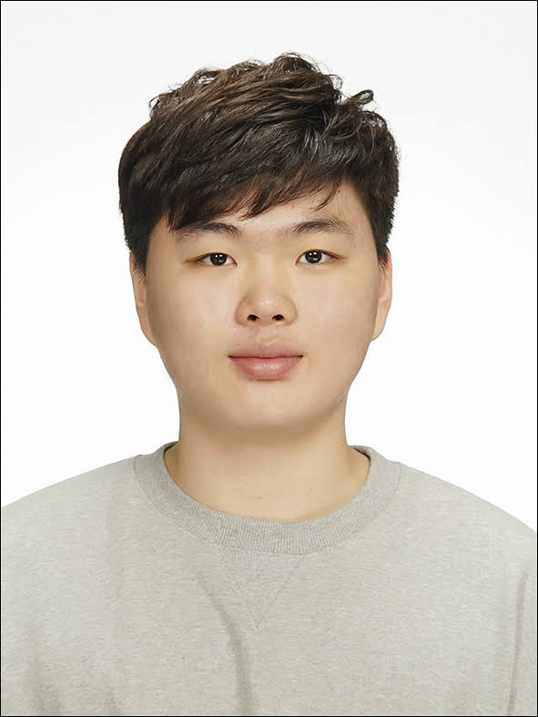

GenProgressBar
Exploring how an interface can adapt its progress representation to a task and an agent’s observable work, helping people understand what is happening at a glance.
In progress · UIST 2027 research direction
Undergraduate Researcher · Ultimate Interface Lab, UNIST
I am a Computer Science student at Handong Global University and an undergraduate research intern at UNIST. My research interests include human–computer interaction, human–agent interaction, and software engineering.
“Live honestly, in harmony with others, and with an enduring curiosity for all that life has to offer.”
I study how people understand, oversee, and collaborate with increasingly autonomous AI agents.
Currently, I’m an undergraduate research intern at the Ultimate Interface Lab, UNIST, advised by Prof. Seongkook Heo. My work sits at the intersection of human–computer interaction, AI agents, and software engineering.
My background is in automated software engineering, code analysis, and agentic systems. My current interests include the design and evaluation of interfaces that help people understand agent behavior and remain involved in decisions.
I study how people monitor progress, make sense of agent behavior, and stay in control while AI works in the background. My current work explores task-adaptive, glanceable representations that provide meaningful signals without demanding constant attention.
Exploring how an interface can adapt its progress representation to a task and an agent’s observable work, helping people understand what is happening at a glance.
In progress · UIST 2027 research directionExploring physical interaction through a wearable haptic device, from CAD and electronics to embodied interface prototyping.
In progress · Joint research prototypeAt Handong Global University’s Intelligent Software Engineering Lab, advised by Prof. Jaechang Nam, I worked on LLM-based automated program repair, code graphs, AI/ML environment automation, and malware detection.
Shinyeob Kang, Jikwang Lee, Hyeokmin Kwon, Jaechang Nam. KCSE 2026 Proceedings, p. 170.
Hyeokmin Kwon, Jikwang Lee, Shinyeob Kang, Yongbean Chung, Jaechang Nam. KCSE 2026 Proceedings, p. 198.
An evolving interface that turns coding-agent events into concise, inspectable progress signals for background work.
A wearable haptic interface prototype combining CAD, motors, embedded electronics, and tangible interaction.
An LLM-based agent that analyzes source imports, dependency files, and installation logs to generate and iteratively repair Conda environments.
Research into static-analysis features and benchmark pipelines for Linux ELF, Windows PE, PDF, Word, and Excel malware.
An MQTT delivery system with active/backup failover, QoS 1, store-and-forward, RTT-based routing, and duplicate filtering.
A LoRa sensing network with multi-hop relay, ACK-based delivery, CRC validation, and a real-time FastAPI dashboard.
Undergraduate Research Intern · Advised by Prof. Seongkook Heo · AI Interaction & Accessibility
Trainee, 13th Cohort
Research Assistant · Collaboration with UMV
Undergraduate Researcher · Handong Global University
Teaching Assistant · Handong Global University
B.S. in Computer Science, Advanced Major in AI Computer Science — Pohang, Republic of Korea
Relevant Coursework: Data Structures, Algorithms, Operating Systems, Database Systems, Machine Learning, Software Engineering, Compiler Theory
Finance with Accounting — Cape Town, South Africa
Google AI Agent Program & Competition · Context Guard
Capstone Festival · Mitigating AI Hallucination
KCSE 2026 · Code Graphs for LLM-based APR Survey
Upstage AI Agent Hackathon · EnvAgent using n8n
Software Festival, Convergence Track · Vintan and Juum
When I’m away from research, I enjoy fishing and watching baseball.
I enjoy spending time by the water.
I like following baseball games.